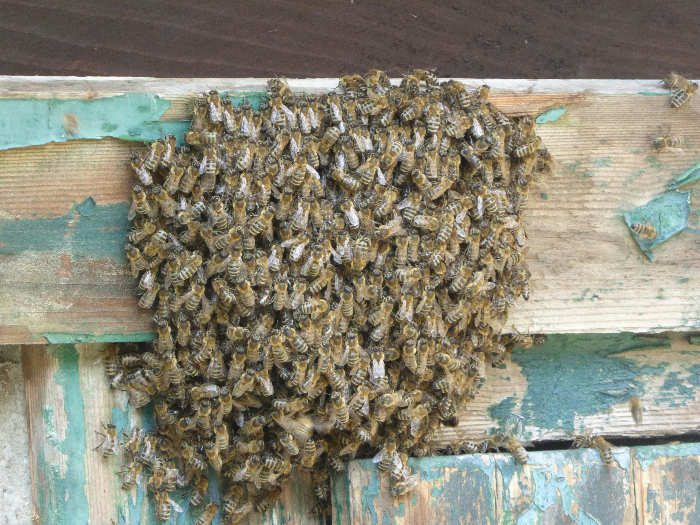

Bee Pests in the UK – Identification, Prevention and Control

When beekeepers talk about “pests”, we usually mean animals that live in or around the hive and damage comb, stores or bees themselves. They are different from diseases, which are caused by bacteria, viruses or other pathogens, but the impact on colony health can be just as serious if they are ignored.
This page gives a practical overview of the main hive pests that UK beekeepers are likely to encounter, as well as emerging threats such as small hive beetle and Asian hornet. Use it alongside the guides on bee diseases, varroa management and hive hygiene to build a joined-up approach to bee health.
What Counts as a Hive Pest?
A hive pest is any animal that lives in or around the hive and causes damage, stress or loss. Some are tiny and live inside comb; others are larger visitors that raid stores or kill bees. Examples include:
- Wax moth – larvae tunnelling through comb and frames
- Mice – nesting in hives over winter
- Wasps and other hornets – robbing honey and attacking weak colonies
- Ants and small scavengers – exploiting spilled syrup or exposed honey
- Small hive beetle and Asian hornet – invasive pests of high concern if found
Strong colonies in suitable locations can tolerate low numbers of many pests, especially if the beekeeper spots them early and takes sensible action.
Key Hive Pests for UK Beekeepers
The list below focuses on pests that are either present in the UK or under active surveillance. Always check current guidance on BeeBase for up-to-date status and notifiable pest information.
Wax Moth (Greater and Lesser)
Wax moth larvae tunnel through comb, leaving silvery tracks, webbing and pellets of frass. They are most troublesome in weak colonies and in comb stored badly between seasons.
- Look for webbing and tunnels in darker, older comb.
- Badly damaged comb may crumble when handled and is often unusable.
- Good comb storage and maintaining strong colonies are the best defences.
Mice
Mice are mainly a problem in autumn and winter when they seek warmth and shelter. A single mouse can destroy comb and foul frames with urine and droppings.
- Use mouseguards or entrance reducers as part of your winter preparation.
- Keep the apiary tidy so there are fewer hiding places.
- Inspect empty hives carefully in spring for signs of nesting material and damage.
Wasps and Other Hornets
Wasps and some hornet species will opportunistically rob weak colonies, especially late in the season when natural forage is scarce. Strong colonies can usually defend themselves if entrances are not too wide.
- Reduce entrances on weaker colonies and avoid leaving exposed honey around the apiary.
- Deal promptly with dead or failing colonies so they do not become robbing magnets.
- Follow official guidance on Asian hornet sightings via BeeBase and local beekeeping associations.
Ants and Small Scavengers
Ants, slugs and other small scavengers are often more of a nuisance than a direct threat, but they can indicate spilled syrup, poor hive stands or other issues around the apiary.
- Keep stands clear, remove vegetation and avoid dripping feed around colonies.
- Simple physical barriers on stands may help in persistent ant problems.
Small Hive Beetle (SHB) and Other Non-native Threats
Small hive beetle and Tropilaelaps mites are not established in the UK but are treated as serious, notifiable threats. Asian hornet (Vespa velutina) is an invasive predator of honey bees that is subject to ongoing control efforts.
- If you suspect small hive beetle, Tropilaelaps mites or Asian hornet, do not move bees or equipment between apiaries.
- Report sightings or suspicions through BeeBase or the relevant UK reporting channels straight away.
- Follow instructions from inspectors exactly – official response plans are updated over time.
Bee Pest Overview – Signs and Prevention
This table summarises some of the common and high-concern hive pests for UK beekeepers. Always check official guidance for detailed control measures.
| Pest | Typical signs | Main risks | Prevention focus | Action if found | Notifiable? |
|---|---|---|---|---|---|
| Wax moth | Silvery tunnels, webbing, damaged comb, pellets of frass in corners or frames. | Destroyed comb, weakened colonies, ruined stored frames. | Strong colonies, good comb storage, removing badly damaged comb. | Remove and destroy badly affected comb, improve storage and colony strength. | No |
| Mice | Nesting material, chewed comb and frames, strong smell, droppings on the floor. | Contamination of comb and stores, destruction of brood frames in winter. | Mouseguards in autumn, tidy apiary, raised stands and regular checks. | Remove mice, clean and assess damage, replace contaminated comb. | No |
| Wasps / other hornets | Persistent attacks at the entrance, fighting bees, damaged or robbed comb. | Loss of stores, destruction of weak colonies, stress on neighbours. | Entrance reduction, avoiding exposed honey, maintaining strong colonies. | Reduce entrances, tidy apiary, follow advice if Asian hornet is suspected. | Asian hornet is notifiable; other wasps normally are not. |
| Ants / small scavengers | Trails around stands, small numbers inside roof space or under floors. | Usually minor nuisance rather than direct colony threat, but may indicate other problems. | Clean stands, limited vegetation, avoid syrup spills, good hive positioning. | Tidy and adjust apiary layout, consider physical barriers if needed. | No |
| Small hive beetle | Adult beetles and larvae in comb, “slimed” honey, fermenting smell. | Serious damage to comb and honey; major risk if established in new areas. | Biosecurity, equipment traceability, following import and movement rules. | Treat as an emergency suspicion and report through official channels immediately. | Yes – notifiable |
Seasonal Pest Pressure Through the Year
Different pests cause problems at different times of year. Linking pest checks to your year-in-the-apiary calendar helps spread the workload.
| Season | Higher-risk pests | Checks and tasks |
|---|---|---|
| Spring | Wasps scouting, wax moth in weak colonies | Check for early wasp activity, tidy apiary, assess overwintered comb for damage. |
| Summer | Wax moth, ants and small scavengers | Monitor stored supers, keep apiary tidy, avoid leaving exposed comb or cappings. |
| Late summer / autumn | Wasps, hornets, robbing, mice exploring hives | Reduce entrances on weaker colonies, consider wasp traps where appropriate, plan mouseguards. |
| Winter | Mice, occasional scavengers in empty boxes | Fit mouseguards, check ties and straps, inspect empty equipment before re-use. |
Pest Prevention Checklist
- Keep colonies strong and queen-right wherever possible.
- Store comb and equipment properly between seasons.
- Keep the apiary tidy – fewer hiding places and less spilled syrup.
- Use entrance reduction and mouseguards at the right time of year.
- Link pest checks to your normal inspection routine and records.
These basics go a long way. They also support the wider work you do on hygiene and varroa monitoring.
Monitoring Tools and Traps
Beekeepers use a mix of visual checks and simple tools to keep an eye on pests:
- Open mesh floors and inserts – show debris patterns, varroa drop and signs of wax moth.
- Wasp traps – sometimes used in late summer around the apiary. Follow local guidance and avoid catching large numbers of non-target insects.
- Mouseguards – simple metal or plastic guards fitted in autumn.
- Asian hornet monitoring traps – used in some areas; always follow current official advice.
What to Do if You Find an Infestation
- Identify the pest as accurately as you can and make notes or take clear photographs.
- Assess the strength of the colony and how much comb or equipment is affected.
- Remove heavily damaged comb and dispose of it safely according to local guidance.
- For notifiable pests or anything you are unsure about, contact your association or BeeBase rather than moving equipment between apiaries.
Serious infestations often go hand in hand with other stresses such as disease or starvation. Reviewing your overall management can help reduce the chance of problems recurring.
Myth-busting – Hive Pests
Beekeepers are an inventive bunch, and you may hear many suggested remedies for pests. Some are harmless; others can cause more problems than they solve.
- “A few wax moths don’t matter in stored comb.” – Low levels may be manageable, but badly damaged comb is best removed and destroyed rather than put back into hives.
- “Wasps only attack weak colonies so there is nothing I can do.” – You cannot control every wasp, but entrance reduction, tidiness and good feeding make a real difference.
- “Ants mean a hive is doomed.” – Ants are usually a nuisance rather than a disaster. Focus on housekeeping rather than harsh treatments.
Bee Pests – Frequently Asked Questions
These quick questions summarise some of the main points and support the FAQ schema at the top of the page:
- Do hive pests always mean I will lose the colony? – No. Many problems can be managed if caught early, especially in strong colonies.
- Should I freeze comb to control wax moth? – Freezing is one option some beekeepers use for stored comb. Always follow current advice and handle frames carefully to avoid damage.
- How do I report a suspected Asian hornet? – Use the channels recommended on BeeBase or by your national beekeeping association and provide clear photographs if possible.
- Can I use household insecticides inside my hive? – No. Products not designed for beehives can harm bees and contaminate honey. Always follow approved guidance.
Summary – Staying Ahead of Hive Pests
Hive pests are part of beekeeping, but they do not have to be a disaster. By keeping colonies strong, storing comb properly, using simple physical defences and staying up to date with official guidance, you can stay ahead of most problems.
Use this bee pests guide alongside the pages on diseases and other conditions, varroa management and the year-in-the-apiary calendar to build a solid, UK-focused plan for looking after your bees.